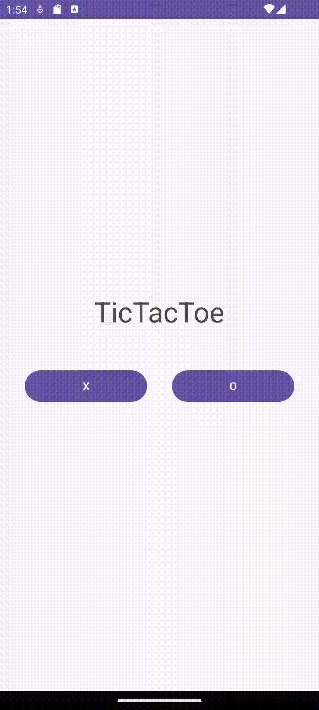

Rammohan Ramanathan
Aspiring Software Developer
UCSC 2021 Graduate
BS Computer Science: Game Design
Scroll down or use the navigation options for more information.
About
My name is Rammohan Ramanathan. I graduated from the University of California, Santa Cruz
with a bachelors in Computer Science: Game design. While programming games is fun, I also enjoy
programming in a general software engineering sense. Optimizing code for use with multiple cores in a processor
and utilizing algorithms to improve runtime of programming tasks are some non-game focused areas I enjoy
working in.
There is a gap in my education after graduating from High School. Between 2013 and 2017 I took time off from college
to reconsider my degree choice and figure out what my plans for the future were. I returned to college in 2017 and took up
pursuing a degree in computer science. My prior experience with mathematics and programming was sour as I was poor in those subjects.
However after the break I took I was able to approach these classes with a more focused mind and a different way of thinking.
I believe the break I took helped me to shift my perspective on education and as a result I performed better than I ever
have in school, earning highest honors on my bachelors degree.
Monte Carlo Tree Search Review: Tic Tac Toe
Github RepoThis github repository is being used to practice the implementation of MCTS. I prototyped an android app that plays tic tac toe against the user. the first passs of the code was done in c++. The program is a tac tac toe bot which uses Monte Carlo to inform the bots decisions each turn. The bot prioritizes wins and ignores defense currently as a result of its current rollout strategy and number of noned the bot expands on. The java version of the code is almost an exact copy of the c++ prototype, with some minor class changes to better suit java syntax. The application was built in android app studio using the java version of the project as a source. The app studio classes interface with the underlying java code to update the state of the board in the application.
GraphPractice: Shortest Delivery Route
Github RepoThis github repository links to a small practice project I did to review working with graphs. I wanted to setup a program that could find the shortest path through multiple nodes from a given starting point. The inspiration for this project stemmed from watching a delivery driver drive their route to deliver parcels. I figure their naviagtion tool gives them the fastest path through multiple destinations so they can finish their job quickly. I wanted to try and create something similar. The program makes use of dijkstra's shortest path and various supporting data structures like a min heap in order to accomplish this.
During my final year at UCSC I worked in a team of 11 on a game called "Gods Of Corruption". I was one of the three programmers who helped develope the game. The game was made using the Unity Engine, and the Yarn Spinner dialogue tool. It is an action game centered around the boss rush genre. I worked on programming some of the bosses, the ui, and overall bug fixing. The footage on in the preview video uses a slightly older build of our game.
Dynamic dungeon Generation
My group project for my Game AI class was based around procedurally generating a dungeon that was solveable given whatever mechanics a designer adds to the dungeon. We used Unity to create a simplified dungeon generation tool which utilized AI programming techniques such as constraint satisfaction, goal oriented action planning, and drama management to verify a dungeons completion as well as monitor the dungeons state dynamically. The avatar moving through the dungeon finds the most effective path to get the key to exit the dungeon, and navigate towards the exit room. Using some basic heuristics we determine if the player would survive the room encounter and spawn more enemies or health in the next room

Procedural Planet Generation
For my generative design class I worked with my classmates to create an environment that could generate planets procedurally while having them orbit. The base concept was adapted from a youtube tutorial by Sebastian Lague. The planets generated use multiple layers of simplex noise to create complex and varied surface level features. I modified the planet generation by having the work be computed dynamically, as well as adding the ability to apply seeds for generation. The additional features such as adding rings around the planet, and how the planets were shaded were done by my teammates.
Resume
Open Resume Copy